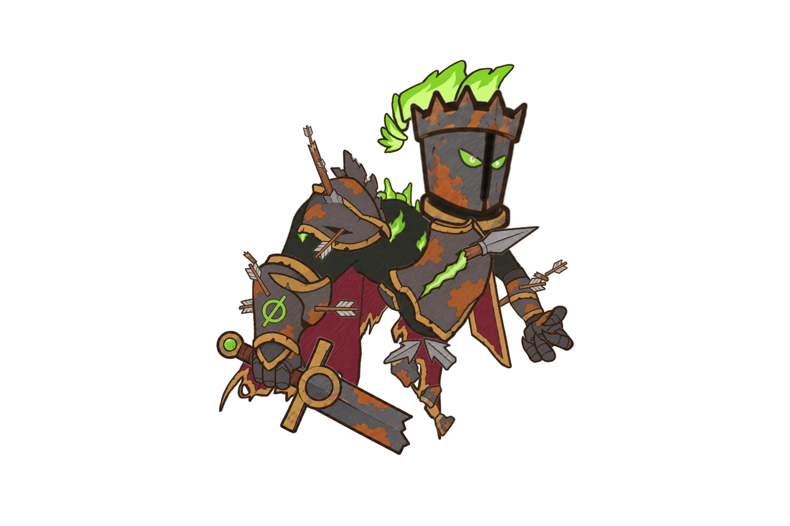
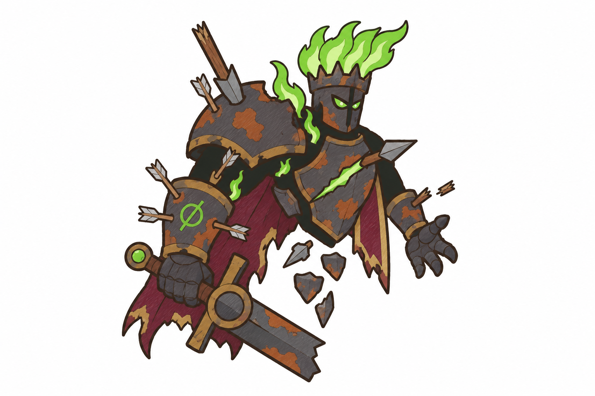
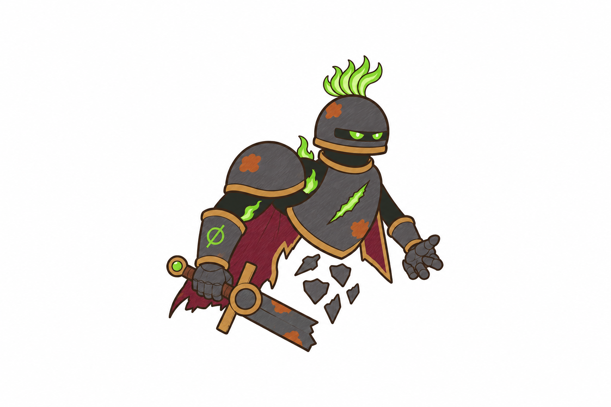
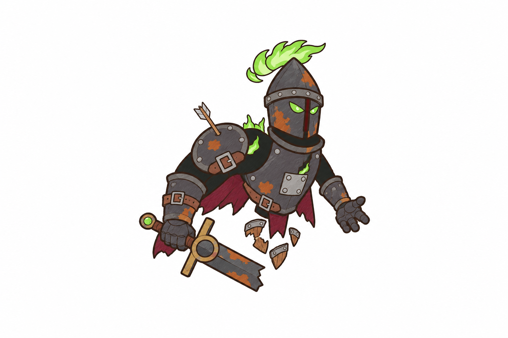
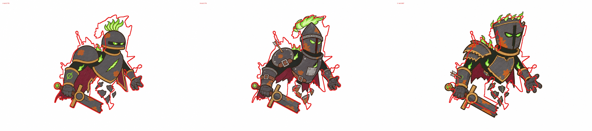

Vong Kỵ Nhi: dạng 1 (kỵ sĩ non) của kỵ sĩ cổ đại bị nguyền, concept lượt 1

Bố cục rig ở tỉ lệ dạng 1 (đầu × 1,4, tay × 0,85, kiếm × 0,8, áo choàng ngắn), dựng bằng da dạng 2: chỉ để so dáng, chỗ, cỡ

Dạng 2 đã duyệt (vua chiến trận cổ): dạng 1 non hơn, ít vết trận hơn, không vương miện

A cận vệ tập sự: mũ chỏm tròn một khe ngang, túm lửa xanh năm lưỡi trên đỉnh, giáp vai một vòm trơn, ngực một vết nứt lộ lửa, KHÔNG mũi tên, ấn Ø trên cẳng tay, mảnh sắt vụn bay. Non và sạch nhất, khác dạng 2 rõ nhất

B hiệp sĩ giáp vá: mũ chóp nhọn có thanh che mũi, chùm lửa vuốt ra sau, giáp vá đinh tán + dây da khoá sắt, giáp vai khiên tròn buộc dây, một mũi tên ở vai, mảnh khiên gỗ bay. Nhiều chi tiết nhất, rỉ hơi nhiều hơn dặnC mũ thùng sứt: mũ thùng quá cỡ móp góc, khe chữ thập, lửa lách ra mép mũ, giáp vai hai tấm răng cưa, khe hở lộ nhiều lửa, một mũi tên ở cẳng tay, đá đen nứt xanh. Gần dạng 2 nhất (như dạng 2 bỏ vương miện), vẽ to hơn bố cục

Viền đỏ = hình bóng bố cục rig chồng lên A, B, C (khớp 0,78 / 0,78 / 0,70). A, B: kiếm, nắm tay, mũ, bàn tay xa trùng bố cục; phần dưới áo choàng ngắn hơn (bước gen mảnh theo khung từng part sẽ nắn lại). C vẽ to hơn bố cục khoảng 8%, kiếm lệch xuống phải: vẫn dùng được (căn lại bằng phép co, như dạng 2)